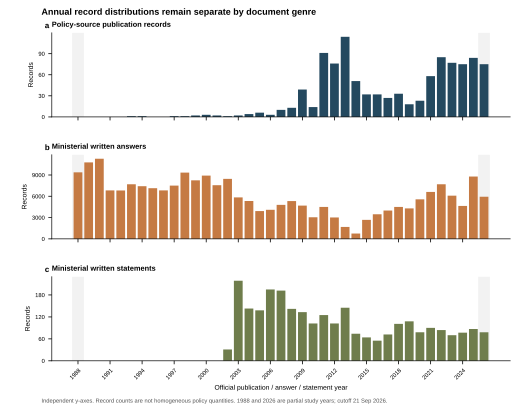
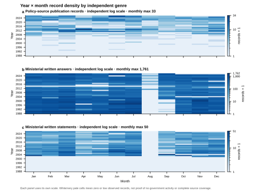
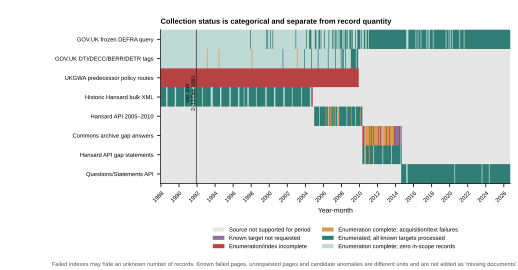
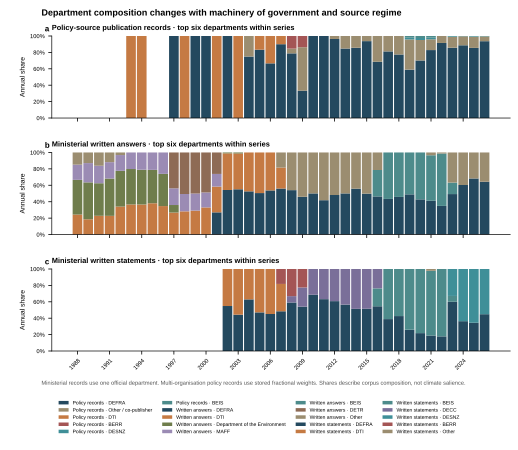

补采后的政府语料分布与覆盖评估
Policy-source publication records1,054
Ministerial written answers235,420
Ministerial written statements2,705
政策、部长书面答复、部长书面声明是三个不同系列。记录数量与采集覆盖状态分开；未知目标数保留为未知。
年度分布

年月密度

采集覆盖状态

部门年度构成

分层覆盖率
| 来源 | 指标 | 分子 / 分母 | 单位 | 比例 |
|---|---|---|---|---|
| GOV.UK frozen DEFRA query | Index/enumeration completion | 39 / 39 | annual query partition | 100.00% |
| GOV.UK frozen DEFRA query | Frozen-target processing | 3,025 / 3,025 | content object | 100.00% |
| GOV.UK frozen DEFRA query | Original acquisition | 3,021 / 3,025 | content object | 99.87% |
| GOV.UK frozen DEFRA query | Text availability | 3,000 / 3,025 | content object | 99.17% |
| GOV.UK frozen DEFRA query | Formal ingestion completion | 1,020 / 1,020 | eligible publication record | 100.00% |
| GOV.UK historical organisation tags | Index/enumeration completion | 88 / 88 | organisation-year partition | 100.00% |
| GOV.UK historical organisation tags | Frozen-target processing | 84 / 84 | content object | 100.00% |
| GOV.UK historical organisation tags | Original acquisition | 84 / 84 | content object | 100.00% |
| GOV.UK historical organisation tags | Text availability | 80 / 84 | content object | 95.24% |
| GOV.UK historical organisation tags | Formal ingestion completion | 34 / 34 | eligible net-new publication record | 100.00% |
| Historic Hansard bulk XML | Index/enumeration completion | 319 / 320 | planned volume | 99.69% |
| Historic Hansard bulk XML | Frozen-target processing | 320 / 320 | planned volume | 100.00% |
| Historic Hansard bulk XML | Original acquisition | 319 / 320 | volume | 99.69% |
| Historic Hansard bulk XML | Text availability | 319 / 320 | volume | 99.69% |
| Historic Hansard bulk XML | Formal ingestion completion | 135,761 / 135,761 | eligible record from acquired volumes | 100.00% |
| Hansard API 2005–2010 answers | Index/enumeration completion | 64 / 64 | calendar-month partition | 100.00% |
| Hansard API 2005–2010 answers | Frozen-target processing | 23,990 / 23,990 | answer-section target | 100.00% |
| Hansard API 2005–2010 answers | Original acquisition | 23,905 / 23,990 | answer-section target | 99.65% |
| Hansard API 2005–2010 answers | Text availability | 23,905 / 23,990 | answer-section target | 99.65% |
| Hansard API 2005–2010 answers | Formal ingestion completion | 23,905 / 23,905 | eligible acquired record | 100.00% |
| Hansard API 2005–2010 statement candidates | Index/enumeration completion | 6 / 6 | annual candidate-search partition | 100.00% |
| Hansard API 2005–2010 statement candidates | Frozen-target processing | 7,013 / 7,013 | candidate detail | 100.00% |
| Hansard API 2005–2010 statement candidates | Original acquisition | 7,006 / 7,013 | candidate detail | 99.90% |
| Hansard API 2005–2010 statement candidates | Text availability | 7,006 / 7,013 | candidate detail | 99.90% |
| Hansard API 2005–2010 statement candidates | Formal ingestion completion | 843 / 843 | eligible acquired statement record | 100.00% |
| Commons publications archive gap answers | Index/enumeration completion | 618 / 638 | dated sitting-day index | 96.87% |
| Commons publications archive gap answers | Frozen-target processing | 851 / 1,063 | known HTML page target | 80.06% |
| Commons publications archive gap answers | Original acquisition | 626 / 1,063 | known HTML page target | 58.89% |
| Commons publications archive gap answers | Text availability | 626 / 1,063 | known HTML page target | 58.89% |
| Commons publications archive gap answers | Formal ingestion completion | 11,135 / 11,135 | eligible record parsed from acquired pages | 100.00% |
| Hansard API gap statement candidates | Index/enumeration completion | 5 / 5 | annual candidate-search partition | 100.00% |
| Hansard API gap statement candidates | Frozen-target processing | 5,676 / 5,676 | candidate detail | 100.00% |
| Hansard API gap statement candidates | Original acquisition | 5,674 / 5,676 | candidate detail | 99.96% |
| Hansard API gap statement candidates | Text availability | 5,674 / 5,676 | candidate detail | 99.96% |
| Hansard API gap statement candidates | Formal ingestion completion | 493 / 493 | eligible acquired statement record | 100.00% |
| Questions/Statements API 2014–2026 | Index/enumeration completion | 62 / 62 | department-year-genre partition | 100.00% |
| Questions/Statements API 2014–2026 | Frozen-target processing | 65,988 / 65,988 | derived record target | 100.00% |
| Questions/Statements API 2014–2026 | Original acquisition | 174 / 174 | parent API response | 100.00% |
| Questions/Statements API 2014–2026 | Text availability | 65,988 / 65,988 | derived record target | 100.00% |
| Questions/Statements API 2014–2026 | Formal ingestion completion | 65,988 / 65,988 | eligible derived record | 100.00% |
结论
总量与预期基线一致，但来源连续性不一致。政策历史标签、volume 200、2005–2010 已知失败目标以及 2010–2014 索引／页面缺口必须保留为部分覆盖；现代接口的 174 个父响应与 65,988 条派生记录使用不同分母。
完整解释与建议见 Markdown 报告；CSV 文件位于本目录。